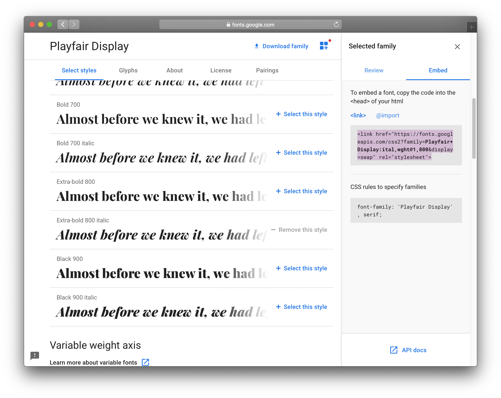

All design på nettsider gjøres med CSS. Språket er lettlest og enkelt å skrive når man først kjenner strukturen.
Noen foretrekker å lese gjennom guiden steg for steg i sitt eget tempo, mens andre lærer bedre gjennom video. Jeg har derfor inkludert en video her som tar for seg mye av det samme som guiden under. Det er opp til deg hvordan du lærer best! Kanskje du vil gå gjennom begge?
Videoinnføring i CSS
Din første CSS-fil
Det første du må gjøre er å opprette en ny fil i nettsidemappa som du kan skrive CSS i. Gå til Sublime Text og klikk File → New File (eller CMD + N). Lagre deretter den nye fila som style.css
Det er samme hva du kaller CSS-fila, så lenge den slutter på .css, men style.css er et veldig vanlig navn å bruke.
Husk å lagre fila i riktig mappe.Når du har lagret fila i riktig mappe skal denne også dukke opp i oversikten i Sublime Text. Slik blir det enkelt å skifte mellom CSS- og HTML-filene når du skal jobbe videre med koden.Nå kan du begynne å skrive CSS!
Forsøk å lime inn denne koden i den nye CSS-fila som eksempel:
h1 {
color: pink;
font-size: 20px;
}
Hvis du nå lagrer og går til HTML-fila i nettleseren din, vil du imidlertid se at ingenting har skjedd.
Ingen CSS her!
Dette er fordi du er nødt til å fortelle nettleseren at den skal inkludere koden fra CSS-fila når den leser HTML-fila. Det gjør du ved å legge inn en link til CSS-fila i "head"-taggen i HTML-fila. Når man skal lenke til en CSS-fil gjøres det på en litt annen måte enn om man skal lage en lenke som besøkende kan klikke på.
Lim inn denne koden rett før den avsluttende </head>-taggen:
Bytt eventuelt ut filnavnet "style.css" med det du kalte din CSS-fil.
Slik skal toppen av HTML-fila se ut etter at du har lagt inn link til CSS-fila.
Om du har lagt inn CSS-fila riktig, skal du nå se i nettleseren at overskriften har byttet fontstørrelse og farge!
Husk at du må lime inn kodelinja som linker til CSS-fila i alle HTML-filene du lager.
Det var bedre!
CSS-syntaks
I CSS henviser du til et element i HTMLen som du ønsker å style, deretter bruker du krøllparenteser for å pakke inn de ulike stilreglene.
h1 {
color: pink;
}
Her henviser vi til <h1>-elementet i HTMLen, og sier at skriftfargen skal være rosa.
Det er viktig å alltid huske på å bruke kolon og semikolon, ellers vil koden leses feil av nettleseren, og stilen du prøver å definere i CSSen vil ikke vises.
Derimot velger du selv om du vil bruke linjeskift etter krøllparentesene, og om du vil bruke mellomrom for å skyve linjene inn mellom parentesene. Dette er kun for å gjøre koden mer lettlest.
Farger
Farger kan defineres på flere forskjellige måter i CSS. Du kan bruke et lite utvalg fargenavn, hex-koder, eller RGB, men ikke CMYK.
Fargenavn
h1 {
color: pink;
}
Blue, red, lime, gold! Sjekk ut listen over fargenavn som nettleseren forstår. Disse bruker jeg når jeg er lat.
Hex-koder
h1 {
color: #FFC0CB;
}
Vet du akkurat hvilken farge du vil ha, må du bruke hex-koder eller RGB. Du kan kopiere disse fra fargevelgeren i programmer som Illustrator eller Photoshop, eller bruke et online verktøy for fargepaletter.
RGB
h1 {
color: rgb(255,192,203);
}
I RGB-fargekoder representerer hvert tall en verdi for henholdsvis R (rød), G (grønn) og B (blå). Tallene går fra 0 til 255, der 0 er sort (eller ingen farge) og 255 er hvit (eller maks farge!). Lær mer om hvordan RGB fungerer gjennom å teste med W3Schools fargekalkulator.
Hva kan endre farge?
h1 {
color: yellow;
}
"Color" endrer skriftfargen.
h1 {
background-color: yellow;
}
"Background-color" eller bare "background" endrer bakgrunnsfargen.
Man kan også bruke farger for å lage ulike rammer, gradientbakgrunner og skygger. Det tar vi en titt på under seksjonen for viderekomne.
Ressurser
ColorHexa.com er et supert verktøy for å finne fargekoder og fargekombinasjoner.
Se eksempler på fargekoder brukt på bakgrunner hos cssreference.io
Fonter
Det finnes et lite utvalg fonter som fungerer i alle nettlesere. Man kan også importere sin egen font, gjennom spesielle webfont-filformater.
På denne siden på W3schools.com finner du liste over hvilke fonter du ikke trenger å importere egne fontfiler for å kunne bruke.
For å endre fontfamilien bruker man CSS-regelen "font-family". Her har jeg definert Helvetica som førstevalg, Arial som andrevalg, og hvis nettleseren ikke finner noen av de to, velger den operativsystemets nærmeste sans-serif-font. En grundigere forklaring på dette finner du her på cssreference.io
Hvordan bruke Google webfonter
På fonts.google.com finner du massevis av gratis webfonter du kan bruke på nettsiden din uten å måtte laste ned filene. Det gjøre enkelt ved at du kopierer inn en linje i head-taggen i HTMLen. Her kommer en liten guide :)
Finn en font du liker
Når du har funnet en font du liker, klikk "Select this style" på høyre side. Da vil det dukke opp en kolonne til høyre med den utvalgte fonten.
Det går an å velge flere fonter på én gang!
Kopier HTML-koden

I kolonnen til høyre, klikk på "embed" og kopier koden under <link>.
Det går også an å bruke koden under @import, denne skal isåfall limes inn i toppen av CSS-fila, ikke i HTML-fila.
Lim inn HTML-koden
Lim inn koden i head-taggen i HTML-filene dine, rett under <link>-taggen der du henter inn CSS-fila.
Husk at du må lime den inn i alle .html-filene der du skal bruke fonten.
Kopier CSS-koden
Kopier CSS-koden der navnet på font-familien er definert. Det er viktig at navnet på fonten i font-family-regelen i CSS-fila di er skrevet akkurat likt som i Google Fonts, ellers vil det ikke funke.
Lim inn CSS-koden
Finn elementet i CSS-fila som du ønsker å bruke fonten på. Hvis det ikke finnes noen CSS-regel for elementet allerede, kan du lage en ny. Jeg vil at overskriften på siden skal bruke fonten. I tillegg er det viktig at reglene for "font-weight" og "font-style" tilsvarer den fonten du valgte i Google fonts. Jeg valgte familien Playfair Display, i stilen kursiv/italic, og i vekten extra bold (800), derfor skriver jeg inn disse på hver sin linje. Se forklaring på hvordan man bruker tallverdier for fontvekter hos cssreference.io
Alle HTML-elementer er firkantede bokser, som enten ligger ved siden av eller oppå hverandre. Det er likevel ett HTML-element som er den ultimate boksen. Dette elementet har ingen annen funksjon enn å være en boks.
<div>
Hei det er meg, boksen
</div>
Hei det er meg, boksen
HTML-elementet "div" har ingen annen funksjon enn å være en boks. Det sier ingenting om innholdet inni, bare at det skal skilles fra innholdet under og over i koden. "Div" står for division. Det er altså bare en måte å få kontroll på en seksjon av innholdet, for å style det med CSS. Her har jeg brukt CSS for å legge på bakgrunnsfarge, bredde, høyde, ++.
Høyreklikk på boksen og velg "Inspiser" for å se koden som ligger bak. Du kan teste ut og endre verdiene i koden i inspiser-verktøyet. Dette påvirker ikke nettsiden forøvrig, endringene du gjør forsvinner når du oppdaterer siden eller klikker deg videre til en annen.
Hvordan boksene vises, defineres av CSS-regelen display. Jeg tar for meg det grunnleggende her, men du kan lese mer om denne på cssreference.io.
div {
display: inline;
}
Når HTML-elementer ligger ved siden av hverandre kalles de for inline. Tekstelementer og bilder er inline som standard. Når de ligger over hverandre kalles det block, og div-elementer er alltid blokker med mindre annet er definert i CSS. En mellomting er inline-block.
Inline-elementer slik som
dette
oppfører seg som ord på en linje med tekst. De har en automatisk bredde og høyde og styres av tekst eller andre elementer rundt.
Inline-block-elementer slik som
dette
oppfører seg som blokker, men ligger fortsatt som på en linje med tekst. Man kan kontrollere elementets bredde og høyde, og avstanden til andre elementer.
Block-elementer slik som
dette
dytter alle andre elementer enten under eller over seg selv. Blokk-elementer opptar en hel rad, og 100% av bredden, med mindre du har sagt noe annet i CSS-koden. På samme måte som med inline-block-elementer, kan man kontrollere elementets bredde og høyde, og avstanden til andre elementer.
Høyreklikk på de gule elementene og velg "Inspiser" for å se forskjellene i koden!
Eksperimenter med boksmodellen
Boksmodellen er et viktig konsept å forstå når man skal jobbe med layout på nettsider. Å prøve seg frem selv er den beste måten å lære om boksmodellen på. Se eksempler på alt man kan gjøre med boksene på cssreference.io
Lag et div-element i din egen .html-fil. Boksen trenger ikke ha noe innhold, men det er lurt for å få et bedre inntrykk av hvordan den fungerer.
<div>Yo</div>
Legg til en regel for div-elementet i CSS-fila di, og se hva som skjer når du endrer på verdiene under. Prøv å bytte fra block til inline, og endre verdiene for høyde og bredde.
Du kan også eksperimentere med width, height, margin og padding på CodePen, som er et kodeverktøy i nettleseren. Klikk på "Edit on Codepen" i høyre hjørne under.
Dette er en dødskjip video. Jeg vet. Jeg skulle gjerne laget min egen, men har ikke hatt tid ennå. Håper den er nyttig, iallfall! Et stykke lenger ned finner du en video om layout som også tar for seg boksmodellen.
Navngi elementer
Man kan skille elementer fra hverandre ved å gi dem navn i HTMLen, for deretter å referere til disse navnene i CSSen. Navnene kalles "klasser".
Hvis man for eksempel har to forskjellige bilder, og vil at det ene skal være 300 piksler bredt, mens det andre skal være 500 piksler, kan man gi det ene en klasse, og lage en egen CSS-regel for den klassen.
På samme måte som når man gir navn til kode- og bildefiler, må også klassenavn i CSS være uten ÆØÅ eller mellomrom.
Videooppsummering
Layout
Det finnes mange måter å designe layout på med CSS. Jeg kan ikke dekke alle her, men peker heller til guider som allerede finnes på nettet. Hvilken metode du velger avhenger av hva slags layout du vil ha.
Det kan hjelpe å tegne opp layouten på papir først, og så finne ut hvordan det er best å kode den. Husk å tenke på at innholdet må stables som bokser.
Har du bestemt deg for hva slags layout du vil ha, men synes det er vanskelig å finne ut hvordan du skal lage den? Send meg en skisse på mail, så kan jeg hjelpe deg!